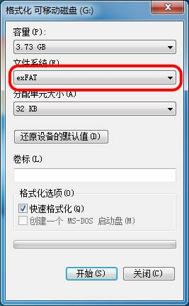
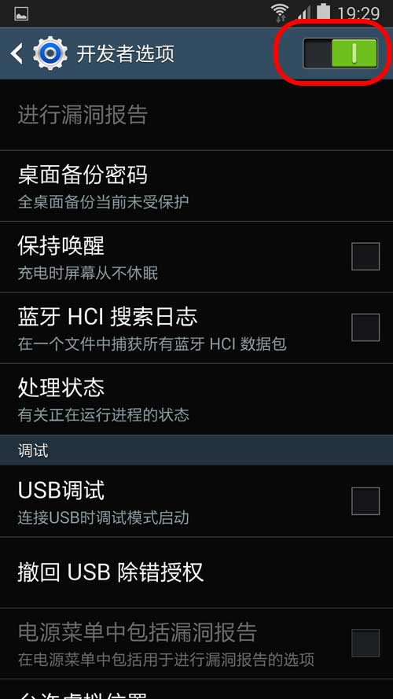

|
| 首页 | GeoTIFF | 今日花园Maps | OruxMaps | OZI | 资源 | 软件 | 联系 |
| 当前位置：OruxMaps ---> OruxMaps离线地图数据包的安装与使用 |
OruxMaps离线地图数据包的安装与使用注意：1) 一般的安卓手机只支持FAT32格式存储卡，FAT32格式的存储卡单个文件的大小不能超过4G。 2) 三星Galaxy S3、S4等安卓手机能支持exFAT格式的存储卡，exFAT格式的存储卡对文件大小没有限制。 3) 在WINDOWS操作系统的电脑中，Windows XP需要安装补丁才能支持exFAT格式，Vista SP1及以后版本都支持exFAT格式。 4) 将TF卡放到读卡器中，把读卡器插入支持exFAT格式的电脑上，就可以对TF卡进行exFAT格式化。如下图所示，文件系统选择exFAT，其它默认值。 |

|
一、OruxMaps离线地图数据包的安装 离线地图数据包的安装请按以下几个步骤进行： 1) 将安卓手机用USB数据线与PC电脑连接，然后可以用以下两种方式之中的任何一种方法来管理手机上的文件： 第一种方法：通过第三方软件，比如：豌豆荚手机精灵、360手机助手等来管理手机上的文件。 第二种方法：将手机设置为开发者调试模式，通过WINDOWS资源管理器来管理手机上的文件。将手机设置为开发者调试模式的步骤如下： |

|
2) 下面以开发者调试模式的方式来介绍地图的安装（通过第三方软件安装地图原理是一样的）。在PC电脑上用WINDOWS资源管理器找到OruxMaps的安装目录，其中mapfiles文件夹就是放置离线地图的默认位置。如下图所示： |

|
3) 每个OruxMaps离线地图数据包都是以一个文件夹的形式存放的，将离线地图数据包文件夹复制到mapfiles文件夹中。注意：文件夹的名称不能改动，否则打不开地图。如下图所示： |
|
4) 也可以把离线地图的默认安装位置设置到别的地方，例如把离线地图放置到手机的外置TF卡上。 注意：安卓4.3以后的版本对外卡有读写权限的限制，所以在高于4.3版本的安卓手机上，也可以将大容量的外置TF卡格式化成内存卡来使用。 把离线地图的放置到手机外置TF卡的具体方法是： 在TF卡上建一个“oruxmaps”文件夹，并在这个“oruxmaps”文件夹中再建一个“mapfiles”文件夹，然后把地图文件夹放到这个“mapfiles”文件夹中。最后把软件中的地图默认路径指向这个“mapfiles”文件夹。修改软件中的地图默认路径的方法如下图所示： |


|
更改路径参数方法如下图所示： |


|
路径参数更改好后，长按最后一个文件夹名称保存参数，如下图所示： |
|
二、OruxMaps离线地图数据包的使用 在安卓手机上运行OruxMaps程序，按下图中的四步骤调用离线地图： |
|
注意：如果你已经在手机上安装了离线地图数据包，但在调用地图时，在离线地图列表中没有看见你安装的离线地图选项，可以将手机关机后重新启动，然后再试试。 三、Oruxmaps 导航软件使用说明书下载 Oruxmaps 导航软件使用说明书：Oruxmaps4.4版导航软件使用说明书.rar 说明：是V4.4版的使用说明书，现在软件更新后界面都有许多的变化，但基本功能都是相同的，此说明书仅供参考。 |
| www.todaygarden.net |
版权所有 2010-2020 今日花园 |